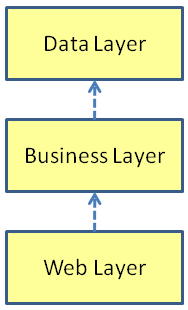
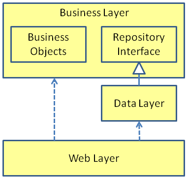

Dependency Inversion and the Repository Pattern
The picture shows the architecture of a web application which uses the Active Record pattern to access the database:
The boxes show the "layers" of the application - web, business and data. The web layer contains the UI components - web forms etc. The business layer contains the business or model objects - the logic and policy of the application. The data layer contains the machinery for talking to the database. The dashed lines show the dependencies between the layers. A dependency occurs when an object creates another object, i.e. when "new" is called, or simply when an object references another object. The web layer creates business objects, so the web layer has a dependency on the business layer. In the active record pattern, the business layer creates data layer objects, so the business layer has a dependency of the data layer. The layers are often put in separate projects within a Visual Studio solution. When you have separate projects, then a dependency also implies a reference between the projects.
So what's the problem? Well, what I really care about is being able to test the business logic without talking to the database. This architecture has destroyed that goal, because the business layer is bound directly to the data layer. There is no point where I can sneak in and replace the data layer with a faked version for testing. At a more abstract level the problem is that the logic or policy of the application, the high level stuff, depends on low level details - how you talk to the database. It's not a good architecture if your abstractions depend on low level details. You want that dependency to be reversed, low level details should depend on abstractions. This is Robert C Martin's Dependency Inversion Principal:
Dependency Inversion Principal "Abstractions should not depend upon details. Details should depend upon abstractions."
If you want to reverse the direction of a dependency you need an interface. In this case the Repository interface will reverse the direction of the data layer dependency. The repository interface is put in the business layer. The business objects interact with the database solely via this high level interface. The data layer implements the repository interface - it contains concrete repositories which actually talk to the database. The web layer still knows about everything. It instantiates the concrete repositories, and passes them to the business objects for use. The inversion of the dependency makes unit testing possible. Since the business objects now depend only on the repository interface, when you unit test you can replace the data layer with in-memory fake repositories. The architecture now follows the dependency inversion principal. The high level objects in the business layer do not depend on the concrete details of the data-layer, rather they depend only on the high level repository interface.